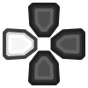
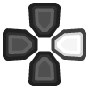

Sony - PlayStation (PCSX2) WIP¶
Last Updated: January 13, 2021
PCSX2 is still under construction. The content on this page is not the final version. Connecting a remote while any content is running may cause retroarch crashes. If you get a failed to load content warning, respectively; Check your BIOS, video driver(try to switch between drivers, use 'GL') and content.
Background¶
PCSX2 is a PlayStation®2 emulator capable of running commercial games. It's an open source project that runs on Windows, Mac and Linux. Like its predecessor project PCSX, it is based on a PSEmu Pro spec plug-in architecture, separating several functions from the core emulator. PCSX2 requires a copy of the PS2 BIOS, which is not available for download from the developers, due to the copyright concerns and legal issues associated with it.
PCSX2 is a free and open-source PlayStation 2 (PS2) emulator. Its purpose is to emulate the PS2's hardware, using a combination of MIPS CPU Interpreters, Recompilers and a Virtual Machine which manages hardware states and PS2 system memory. This allows you to play PS2 games on your PC, with many additional features and benefits.
PCSX2, supports a wide range of PlayStation 2 video games with a high level of compatibility and functionality. Although PCSX2 can closely mirror the original gameplay experience on the PlayStation 2, PCSX2 supports a number of improvements over gameplay on a traditional PlayStation 2, such as the ability to use custom resolutions up to 8192×8192, anti-aliasing, and texture filtering.
PCSX2 core has been authored by
PCSX2 core is licensed under
A summary of the licenses behind RetroArch and its cores can be found here.
Requirements¶
- Supports SSE2/AVX2
- PassMark Single Thread Performance rating near or greater than 1600/2100
- Two physical cores, with hyperthreading
- Four physical cores, with or without hyperthreading
- Direct3D10/11 support
- OpenGL 3.x/4.5 support
- PassMark G3D Mark rating around 3000 (GeForce GTX 750)
- 2 GB/4 GB Video Memory
- 4GB/8GB
Attention
Because of the complex nature of emulation, even if you meet the recommended requirements there will be games that will NOT run at full speed due to emulation imperfection, floating point emulation differences, issues with emulator itself or other problems.
BIOS¶
Tip
Interesting fact: For maximum compatibility it is recommended that you use a BIOS image different than SCPH10000.BIN which is the oldest one
Info
Transfer your BIOS files to the retroarch/system/PCSX2/bios/ directory.
There is no region locking so if you have a PAL BIOS on your PS2 you can still play NTSC games, and vice versa. You'll also need the BIOS dumped from your PS2. Unlike the PS2 PCSX2 does not implement region locking so if you have a PAL BIOS in your PS2 you can still play NTSC games, and vice versa.
Required or optional firmware files go in the frontend's system directory.
| Filename | Description | md5sum |
|---|---|---|
| PS2 Bios 30004R V6 Pal.bin | - | - |
| PS2 Bios 30004R V6 Pal.MEC | - | - |
| PS2 Bios 30004R V6 Pal.NVM | - | - |
| rom1.bin | - | - |
| scph10000.bin | - | - |
| scph10000.NVM | - | - |
| scph39001.bin | - | - |
| scph39001.MEC | - | - |
| scph39001.NVM | - | - |
| SCPH-70004_BIOS_V12_PAL_200.BIN | - | - |
| SCPH-70004_BIOS_V12_PAL_200.EROM | - | - |
| SCPH-70004_BIOS_V12_PAL_200.NVM | - | - |
| SCPH-70004_BIOS_V12_PAL_200.ROM1 | - | - |
| SCPH-70004_BIOS_V12_PAL_200.ROM2 | - | - |
| SCPH-70004_BIOS_V12_PAL_200.NVM | - | - |
Extensions¶
Content that can be loaded by the PCSX2 core have the following file extensions: elf|iso|ciso|cue|bin
- .elf
- .iso
- .ciso
- .cue
- .bin
RetroArch database(s) that are associated with the PCSX2 core:
Features¶
Frontend-level settings or features that the PCSX2 core respects.
| Feature | Supported |
|---|---|
| Restart | ✔ |
| Screenshots | ✔ |
| Saves | ✔ |
| States | ✕ |
| Rewind | ✕ |
| Netplay | ✕ |
| Core Options | ✔ |
| RetroAchievements | ✕ |
| RetroArch Cheats | ✕ |
| Native Cheats | ✔ |
| Controls | ✔ |
| Remapping | ✔ |
| Multi-Mouse | ✔ |
| Rumble1 | ✔ |
| Sensors | ✕ |
| Camera | ✕ |
| Location | ✕ |
| Subsystem | ✕ |
| Softpatching | ✕ |
| Disk Control | ✕ |
| Username | ✕ |
| Language | ✕ |
| Crop Overscan2 | ✕ |
| LEDs | ✕ |
Directories¶
PCSX2's library name is 'pcsx2'
PCSX2 core saves/loads to/from these directories.
Frontend's Save directory
- Memory cards
..\system\PCSX2\memcards\
Frontend's State directory
| File | Description |
|---|---|
| *.state# | State |
Rumble support¶
Rumble only works in the PCSX2 core when
- The content being ran has rumble support.
- The frontend being used has rumble support.
- The joypad device being used has rumble support.
- The corresponding user's device type is set to DualShock
- The corresponding user's device type is set to DualShock 2
Joypad¶

| User 1 - 8 input descriptors | RetroPad Inputs | PlayStation Controller Inputs | DualShock Inputs | Analog Controller Inputs | Analog Joystick Inputs | neGcon Inputs |
|---|---|---|---|---|---|---|
| Cross |  |
 |
|
|
|
Analog button I |
| Square |  |
 |
|
|
|
Analog button II |
| Select |  |
|||||
| Start |  |
 |
|
|
|
Start |
| D-Pad Up |  |
 |
|
|
|
D-Pad Up |
| D-Pad Down |  |
 |
|
|
|
D-Pad Down |
| D-Pad Left |  |
 | D-Pad Left | |||
| D-Pad Right |  |
 | D-Pad Right | |||
| Circle |  |
 |
|
|
|
A |
| Triangle |  |
|
|
|
B | |
| L1 |  |
 |
|
|
|
Left shoulder button (analog) |
| R1 |  |
 |
|
|
|
Right shoulder button (digital) |
| L2 |  |
 |
|
|
|
Analog button II |
| R2 |  |
Analog button I | ||||
| L3 |  |
|||||
| R3 | ||||||
| Left Analog X |  X X |
Left Joystick X | Twist | |||
| Left Analog Y | Y |
Left Joystick Y | ||||
| Right Analog X |  X X |
Right Joystick X | ||||
| Right Analog Y | Y |
Right Joystick Y |
Compatibility¶
The current standalone development version is reported to be compatible with approximately 97.4% of 2,641 tested games as of August 2020. Compatibility means only that the game will not crash, lock up, or enter a loop; there can still be bugs, missing post-processing effects, textures, and shadows in many compatible games. This is especially the case in hardware mode; a slower software mode is available for bugs without workarounds. You can check compatibilirt list in here
External Links¶
- Official PCSX2 Website
- Official PCSX2 Downloads
- PCSX2 Core info file
- PCSX2 Github Repository
- Report PCSX2 Core Issues Here
Libretro PS2 cores¶
- Play!